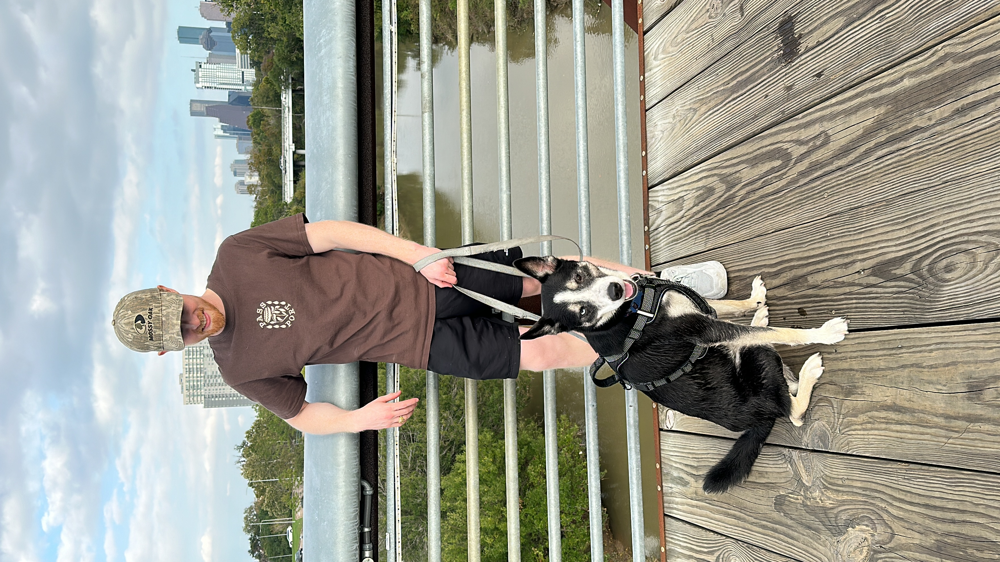

One of my favorite hobbies is fishing. I love how it challenges me to come up with the best lure combinations, locations, and technique to fit each body of water I'm fishing in and my intended fish species. It's also very relaxing being able to detach from my fast-paced worklife and just enjoy the calm of nature. Growing up in the Dallas area, I've only ever fished freshwater creeks, ponds, and a few lakes. Now that I live in Houston, I still need to find time to dip my toes into saltwater fishing.
I used to skateboard when I was really young, mostly elementary through middle school. I was never very good but I enjoyed it. Once I went to college, I ended up being bored since I didn't have any hobbies to challenge myself and decided to pick the skateboard back up. There were two nice parks in college station and I ended up picking the basics back up pretty fast. Now I just skate occasionally when i want to get some cardio in and not take myself too seriously. I can kickflip so I'm certified.
One of my favorite things to do is something I don't do nearly enough. I'm fascinated by exploring places I've never been to see what the cultuere, local economy, local architecture, and geography is like. If I wasn't concerned with getting lost or with my own safety, I could walk around a new city all day just to see what life is like outside of my own bubble. I drove through Austin in the summer of 2023 after proposing to my Fiance in Fredricksburg, and had no idea that Texas could be something other than flat. We ate at a place on the river that felt like we were in a different world. It was a bummer driving back into Houston to be greeted with busy highways, concrete jungles, a flat horizon with no end in sight. Hopefully over the next few years I can find the time and funds to get o experience exploration more frequently.
I have a husky lab mix named Kiko. My fiance and I added him to the family on December 5th of 2021 when he was 7 months old. Not necessarilly a hobby, but he does give me a reason to get out and go walking. My favorite place to take him is Buffalo Bayou downtown. There's a park there with some pools that he loves to swim in.
